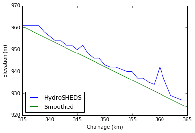

Setting up the LISFLOOD-FP Arkansas simulation
We start by downloading the HydroSHEDS elevation DEM and reprojecting it to the World Mercator projection. Additionally we download shapefiles for the basin and rivers from NOHRSC.
cd ~/Work/Swot gdalwarp -dstnodata -9999 -t_srs epsg:3395 data/hydrosheds/na_dem_15s/na_dem_15s na_dem.tif
Then we extract the extent of the basin shapefile and use those coordinates as the bounding box to generate the Arkansas River basin DEM.
cd ~/Work/Swot ogrinfo -al -so ~/Downloads/b_abrfc/arkansas.shp | grep Extent | awk -F'[(,]' '{printf("%f %f\n%f %f\n",$2,$5,$4,$3)}' | gdaltransform -s_srs epsg:4326 -t_srs epsg:3395 -output_xy gdal_translate -a_nodata -9999 -projwin -11866240.2704725 4749554.46189774 -10240048.0795739 3922731.2771146 na_dem.tif data/hydrosheds/arkansas_dem.tif
Within GRASS GIS, we calculate the flow accumulation and derive a consistent river network using 10,000 km2as a drainage area threshold.
cd ~/Work/Swot v.in.ogr in=data/arkansas_basin.shp out=basin v.to.rast in=basin out=basin use=val value=1 r.in.gdal in=data/hydrosheds/arkansas_dem.tif out=hydrosheds.dem g.region rast=hydrosheds.dem g.region res=1000 r.resamp.stats in=hydrosheds.dem out=hydrosheds.elev r.mask basin r.watershed -4 elev=hydrosheds.elev accum=hydrosheds.flowacc stream=hydrosheds.river drain=hydrosheds.flowdir threshold=10000 r.mask -r r.out.gdal in=hydrosheds.flowacc out=data/hydrosheds/arkansas_acc.tif nodata=-9999 r.out.gdal in=hydrosheds.flowdir out=data/hydrosheds/arkansas_flowdir.tif nodata=-9999 r.out.gdal type=Float64 in=hydrosheds.elev out=data/hydrosheds/arkansas_elev.tif nodata=-9999
Then we import the width and depth database and attach the attributes to the nearest river segment in the derived network.
cd ~/Work/Swot ogr2ogr -t_srs epsg:3395 -clipdst -11866240.2704725 3922731.2771146 -10240048.0795739 4749554.46189774 rivs.shp data/hydrosheds/nariv.shp v.in.ogr -r in=rivs.shp out=nariv where='AREA>10000' r.to.vect in=hydrosheds.river out=river type=line v.db.addcolumn map=river col='width real' v.db.addcolumn map=river col='depth real' v.distance from=river to=nariv upload=to_attr to_column=DEPTH column=depth v.distance from=river to=nariv upload=to_attr to_column=WIDTH column=width
Now we rasterize the river vector to get the width and depth rasters.
cd ~/Work/Swot v.out.ogr in=river out=river.shp gdal_rasterize -tr 1000 -1000 -te -11866312.89618489 3922978.04043566 -10239890.36676315 4749955.88036534 -a_srs epsg:3395 -a width river.shp data/hydrosheds/arkansas_widths.tif gdal_rasterize -tr 1000 -1000 -te -11866312.89618489 3922978.04043566 -10239890.36676315 4749955.88036534 -a_srs epsg:3395 -a depth river.shp data/hydrosheds/arkansas_depths.tif
The next steps involve preparing the actual LISFLOOD-FP input files. Given the uncertainty in the DEM, we will smooth the river bank heights to avoid any numerical instabilities during simulation. This is accomplished by first identifying the upstream and downstream boundary points in the domain, labeling the river channels and calculating each one's chainage (i.e. distance downstream).
import sys sys.path.append("/Users/kandread/Work/Swot/scripts") import lisflood flowdir = lisflood.read_raster("/Users/kandread/Work/Swot/data/hydrosheds/arkansas_flowdir.tif") flowacc = lisflood.read_raster("/Users/kandread/Work/Swot/data/hydrosheds/arkansas_acc.tif") widths = lisflood.read_raster("/Users/kandread/Work/Swot/data/hydrosheds/arkansas_widths.tif") river = widths > 0 bndpts = lisflood.find_boundary_points(river) labels, chainage = lisflood.calc_chainage(river, flowdir, flowacc, bndpts, 1000)
The smoothing of the bank heights is done by using a LOWESS local regression, and the channel is burned in to the DEM by subtracting the depth raster.
elev = lisflood.read_raster("/Users/kandread/Work/Swot/data/hydrosheds/arkansas_elev.tif") depths = lisflood.read_raster("/Users/kandread/Work/Swot/data/hydrosheds/arkansas_depths.tif") depths[depths < 0] = 0.0 selev = lisflood.smooth_bank_heights(elev, labels, chainage) belev = lisflood.burn_channel(selev, river, depths) lisflood.write_raster(belev, "/Users/kandread/Work/Swot/data/hydrosheds/arkansas_belev.tif", "/Users/kandread/Work/Swot/data/hydrosheds/arkansas_elev.tif")
As an example, the problems of the HydroSHEDS DEM are obvious in the figure below as well as the impact of the smoothing to create the channel.
%matplotlib inline import matplotlib.pyplot as plt import numpy as np plt.plot(np.sort(chainage[labels == 1])/1000, elev[labels == 1][np.argsort(chainage[labels == 1])], label="HydroSHEDS") plt.plot(np.sort(chainage[labels == 1])/1000, belev[labels == 1][np.argsort(chainage[labels == 1])], label="Smoothed") plt.xlabel("Chainage (km)") plt.ylabel("Elevation (m)") ax = plt.gca() ax.set_xlim([335, 365]) ax.set_ylim([920, 970]) plt.legend(loc=0)
Next we identify the upstream and lateral inflow points, and generate the BCI file.
from osgeo import gdal inflows = lisflood.identify_inflows(river, chainage, labels, flowacc, 10000) f = gdal.Open("/Users/kandread/Work/Swot/data/hydrosheds/arkansas_elev.tif") xul, xres, _, yul, _, yres = f.GetGeoTransform() f = None nrows, ncols = elev.shape lisflood.write_bci("/Users/kandread/Work/Swot/input/arkansas.bci", inflows, xul, yul, xres, yres, nrows, ncols)
Then we generate the DEM and sub-grid channel width files.
cd ~/Work/Swot gdal_translate -tr 1000 -1000 -of AAIGrid -a_nodata -9999 data/hydrosheds/arkansas_belev.tif input/arkansas.dem gdal_translate -tr 1000 -1000 -of AAIGrid -a_nodata -9999 data/hydrosheds/arkansas_widths.tif input/arkansas.width
If we need LISFLOOD-FP to produce a time series of river flow at specific locations, we need to generate a virtual gauge file.
x = [-10646593, -10280351] y = [4251217, 4111394] lisflood.write_gauges(x, y, chainage, "/Users/kandread/Work/Swot/data/hydrosheds/arkansas_widths.tif", "/Users/kandread/Work/Swot/input/arkansas.gauge")
The final step is generating the BDY file for LISFLOOD-FP, which contains the streamflow at the inflow points (in m2/s). For this simulation we will use the output of the VIC routing model forced by the NLDAS-2 VIC model output. We need to prepare the input files for the routing model, describing the flow direction, flow fraction and station locations. Within GRASS GIS, we create a new region with Lat/Long projection and work within that region to create the necessary files.
g.proj epsg=4326 location=arkansas.latlon g.mapset mapset=PERMANENT location=arkansas.latlon g.region n=39.5 s=32.25 e=-91.875 w=-106.75 res=0:00:30 r.proj mapset=arkansas location=arkansas in=hydrosheds.elev method=bilinear r.proj mapset=arkansas location=arkansas in=basin r.mapcalc exp='basin1=if(isnull(basin),0,1)' g.region res=0.125 r.watershed -s elev=hydrosheds.elev accum=hydrosheds.flowacc drain=hydrosheds.flowdir r.resamp.stats in=basin1 out=fract r.reclass in=hydrosheds.flowdir out=flowdir rules=flowdir.rules r.mapcalc --o exp='flowdir=flowdir' r.null map=flowdir setnull=0 r.null map=fract null=0 r.out.gdal in=fract out=arkansas.fract format=AAIGrid nodata=0 r.out.gdal in=flowdir out=arkansas.flowdir format=AAIGrid nodata=0
The station file is created from the inflows identified
from pyproj import Proj wmerc = Proj("+init=EPSG:3395") fout = open("arkansas.stations", 'w') for sta, xy in enumerate(inflows): x, y = wmerc(xul+xres*xy[1], yul+yres*xy[0], inverse=True) xi = int((x+106.75)/0.125) + 1 yi = int((y-32.25)/0.125) + 1 fout.write("1\tAR{0:03d}\t{1}\t{2}\t-9999\nNONE\n".format(sta, xi, yi)) fout.close()
Finally, the BDY file is written using the VIC routing model's output.
stations = ["AR{0:03d}".format(s) for s in range(len(inflows)] lisflood.write_bdy("/Users/kandread/Work/Swot/input/arkansas.bdy", "/Volumes/External2/nldas2", stations)
Comments